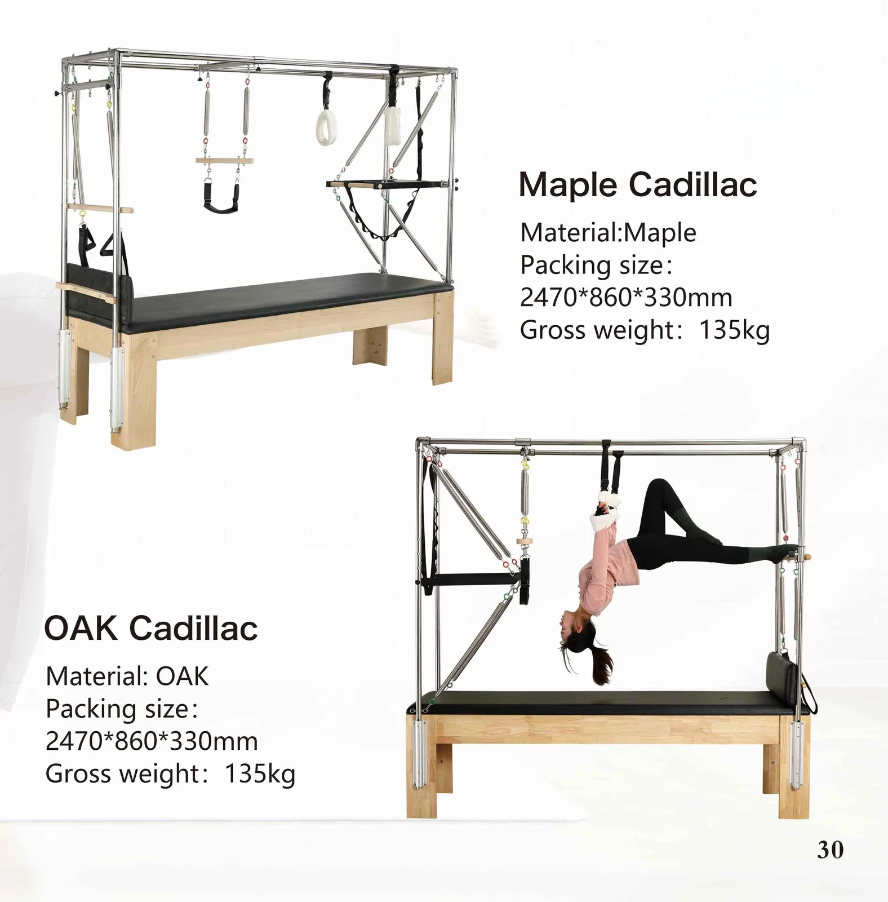
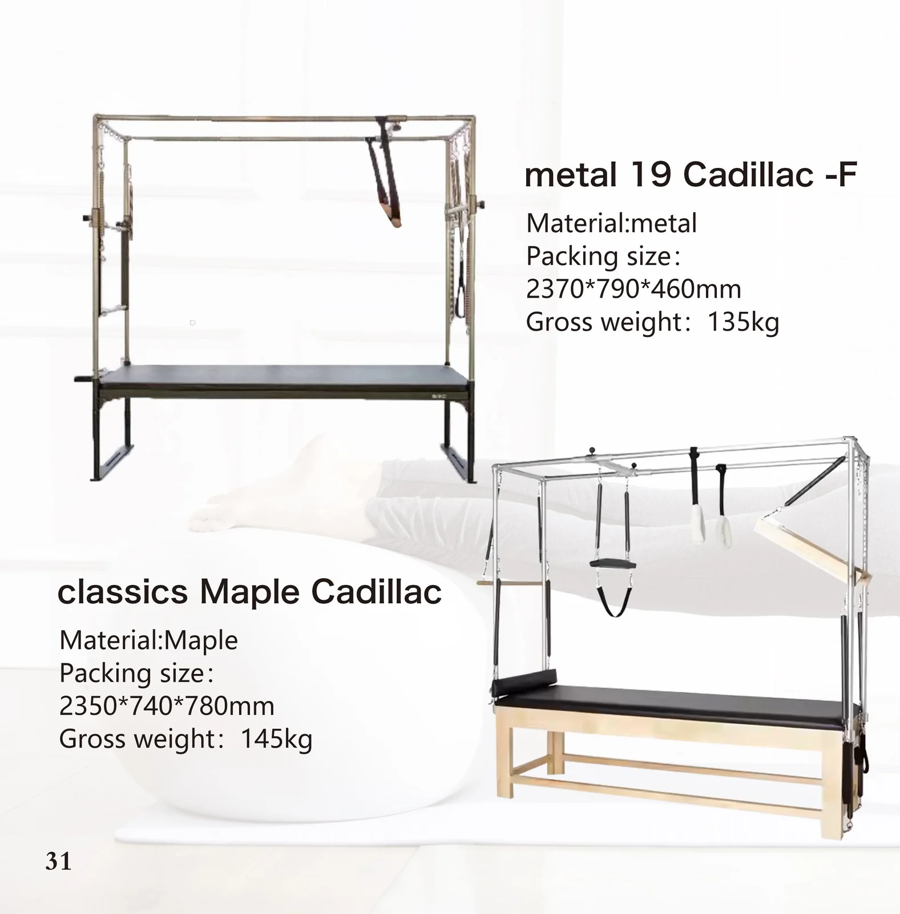

Maple Cadillac
카탈로그 30페이지 · 모델 1/2
- 재료
- 메이플
- 포장 사이즈
- 2470 × 860 × 330 mm
- 총중량 (Gross Weight)
- 135 kg
다른 이름으로는 캐딜락 침대 당사의 영어 카탈로그에서
캐딜락(트라페즈 테이블)은 모든 필라테스 기구 중에서도 가장 폭넓은 운동 동작을 수행할 수 있습니다. 본 제품에는 스테인리스 스틸 타워, 타워 스프링 10개, 푸시-스루 바, 트라페즈, 안전 스트랩, 풋보드 및 목재 다월이 포함되어 있어, 조립이 완료되는 당일부터 스튜디오에서 바로 수업을 시작할 수 있습니다.

아래의 모든 기구는 당사 2026년 카탈로그에 수록되어 있습니다. 모델을 선택해 주시면 해당 코드 그대로 견적해 드립니다.
각 이미지는 인쇄본 그대로의 카탈로그 페이지입니다. 이미지에 표기된 사양은 그 아래 텍스트로도 반복 수록되어 있어 검색·번역이 가능하고 발주서에 바로 붙여넣으실 수 있습니다.

카탈로그 30페이지 · 모델 1/2
카탈로그 30페이지 · 모델 2/2

카탈로그 31페이지 · 모델 1/2
카탈로그 31페이지 · 모델 2/2
라인별로 카탈로그 순서대로 분류되어 있습니다. 대시(-)는 해당 수치가 카탈로그에 인쇄되어 있지 않음을 의미하며, 주문 시 확인해 드립니다.
| 모델 | 재료 | 포장 사이즈 A | 포장 사이즈 B | 총중량 (Gross Weight) |
|---|---|---|---|---|
| Maple Cadillac | 메이플 | 2470 × 860 × 330 mm | — | 135 kg |
| OAK Cadillac | 오크 | 2470 × 860 × 330 mm | — | 135 kg |
| metal 19 Cadillac-F | 메탈 | 2370 × 790 × 460 mm | — | 135 kg |
| classics Maple Cadillac | 메이플 | 2350 × 740 × 780 mm | — | 145 kg |
모든 모델은 소재, 업홀스터리 색상, 스프링 공급처, 포장에 따라 맞춤 제작이 가능합니다. 대시(-)는 2026년 카탈로그에 해당 수치가 인쇄되어 있지 않음을 의미하며, 주문 시 확인해 드립니다.
스튜디오 개설 또는 확장: 한 번의 주문과 한 번의 배송으로 5종 세트를 한 번에 배송해 드립니다.
고객사의 모델 번호 체계와 사양서를 반영한 컨테이너 단위 포장 프로그램.
자사 브랜드 제품 제조: 프레임에 귀사의 로고를 새기고, 귀사가 지정한 색상과 가죽 사양을 적용합니다.
임상용 래더 배럴, 스파인 코렉터 및 양방향 래더 베드.
공간이 제한된 웰니스실을 위한 컴팩트한 알루미늄 소재 및 접이식 라인.
가정용 ‘리포머’ 및 접이식 SKU를 위한 FBA 준비용 포장 및 라벨링.